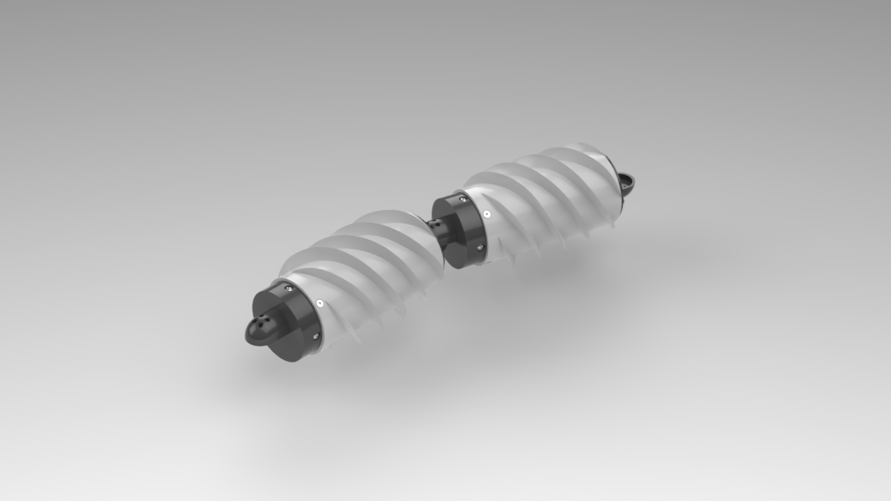

Overview
Inspired by JPL's robotic snake, which used rotating external spirals to maneuver across different terrain,
I took on the challenge of developing my own version with the mentorship and guidance of Dr. Yoon at the
University of Alabama. Publicly available videos revealed little about the robot's internal construction,
so I developed my own internal architecture based on its observed motion.
This project was one of my first experiences designing a mechanical system with moving custom parts and
taught me a lot about mechanism design, component selection, DFM/DFA, FDM tolerances, and physical
prototyping.
Mechanical Design
One of the main design challenges was allowing the external spiral to rotate while keeping the motors and
electronics stationary inside the robot. I started with two geared motors provided by my mentor and researched
different methods of transferring their rotation to the external spiral.
I developed a planetary-style gear system using the gear attached to the motor as the sun gear. This drove a
separate planet gear mounted to the stationary internal structure, which then transferred rotation to an internally
toothed ring gear connected to the external spiral.
This allowed the drivetrain and electronics to remain enclosed inside the robot while transferring rotation to the
exterior segments.
Initial Prototype
My initial design was manufactured using PLA FDM printing because it was inexpensive and allowed me to quickly
manufacture custom geometry. However, the first physical prototype exposed several problems I had not accounted for
in CAD.
The printed shafts did not consistently fit into their corresponding holes because I had not properly accounted for
FDM dimensional tolerances. Support material also reduced the surface quality and dimensional accuracy of
the underside of overhangs.
The main tube body created another manufacturing issue. I originally designed it as a single component, which
required a large amount of internal support material. Removing the supports took roughly 30 minutes and made
manufacturing and assembly unnecessarily difficult.
Tolerancing and DFM
Instead of repeatedly changing dimensions and reprinting the entire assembly, I designed a test piece with different
shaft and hole dimensions. I printed and tested the different combinations to determine clearances and press-fit
dimensions that worked reliably with the printer, then incorporated those dimensions into later iterations.
I also redesigned the main body from a single tube into two separate components. Splitting the geometry significantly
reduced the amount of required support material, improved access to printed surfaces, and made the internal components
much easier to assemble.
Testing and Iteration
Locomotion
I initially manufactured and tested a single segment using an Arduino Uno R3 to control the motor. When powered, the
segment primarily rotated in place instead of translating forward.
From this test, I determined that a second segment with external spirals oriented in the opposite direction was needed
to counteract the rotation of the first segment. I added a second section and modified the controls so the two external
spirals could rotate together while opposing each other's tendency to rotate the overall robot.
Mechanical Friction
The two-segment prototype still struggled to move as intended. Initially, I considered available motor torque and power
as possible limitations, but manually rotating the external sections also required substantial force. This indicated
that friction within the drivetrain was contributing to the problem.
After researching methods for reducing friction at rotating interfaces, I redesigned the drivetrain to incorporate
bearings and adjusted the surrounding geometry for the required fits. The bearing-supported iteration rotated
substantially more smoothly by hand and allowed the drivetrain motions to operate as intended.
Final Design
Although the bearing-supported drivetrain significantly reduced mechanical resistance, the available motors still
limited the robot's locomotion. Since I was constrained to the motors available for the project, I completed the
remaining mechanical design around the improved drivetrain rather than continuing to redesign around the existing motors.
The final CAD incorporated dedicated mounting for the Arduino and motor-control electronics while keeping the components
enclosed within the robot. It also incorporated the manufacturing and assembly improvements developed through the
physical prototypes, leaving the drivetrain architecture open to a future motor upgrade.
What I Learned
This project changed how I approached CAD by showing me that geometry that works on a computer does not necessarily
manufacture, assemble, or operate as expected. Through each physical prototype, I learned to account for FDM tolerances,
support accessibility, component fits, friction, and assembly earlier in the design process rather than addressing them
after manufacturing.
It also gave me my first experience developing a mechanical system from observed behavior rather than an existing design,
requiring me to research mechanisms and develop my own solution for transferring motion from an enclosed motor to the
rotating external sections.